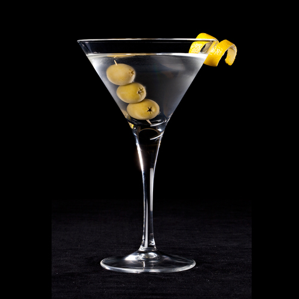

Martini

Total Time: 4 min
Prep: 4 min
Difficulty: Easy
Ingredients
* 3 fluid ounces vodka
* 1 fluid ounce dry vermouth
* 1 cup ice cubes
* 3 olives
* 1 strip of lemon peel
Instruction
Combine vodka and dry vermouth in a cocktail mixing glass. Fill with ice and stir until chilled. Strain into a chilled martini glass.
Garnish with three olives on a toothpick and lemon peel.
Close Receipe